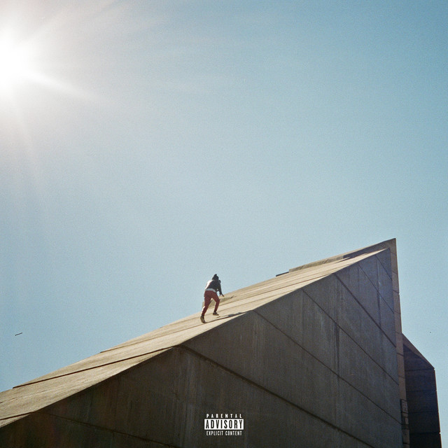
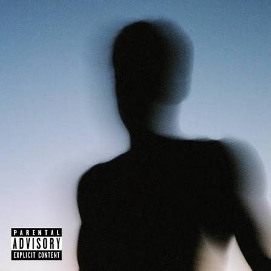
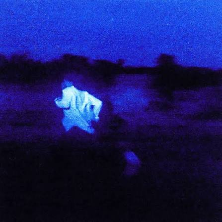

WORKS
Freudian (2017)

Su álbum debut. Un disco íntimo sobre amor, deseo y fe, con canciones como "Get You" y "Blessed".
Escuchar en YouTubeCase Study 01 (2019)

Un álbum más experimental y reflexivo, donde también aparece "Best Part".
Escuchar en YouTubeNEVER ENOUGH (2023)

Su disco más reciente: más oscuro y emocional, sobre las inseguridades y la búsqueda de sentido.
Escuchar en YouTube